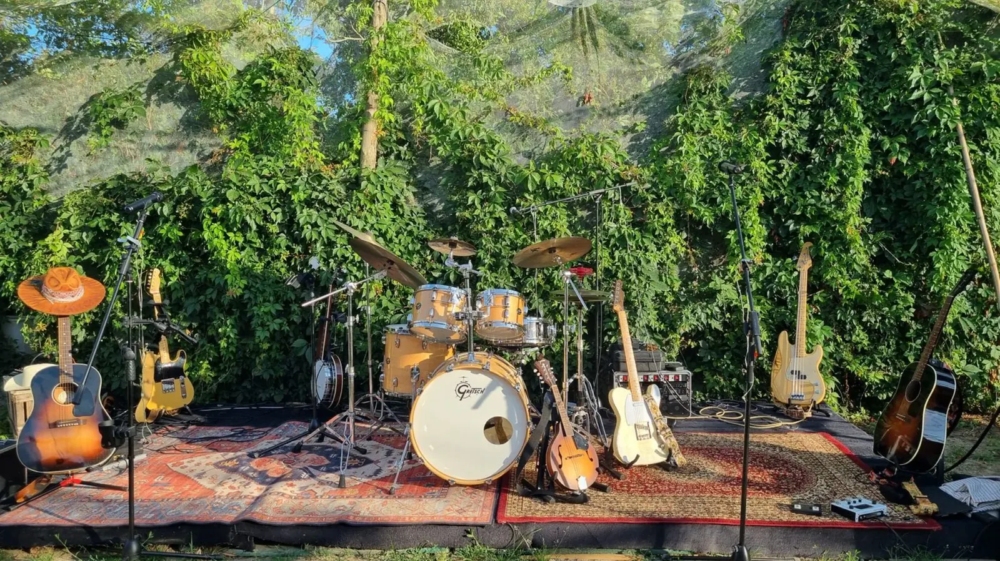

Dalle verande degli Appalachi ai festival di oggi: cos’è il country, da dove viene e perché riempie i palchi anche in Italia.
Il country nasce nel Sud degli Stati Uniti nei primi decenni del Novecento, dall’incontro di tradizioni diverse: il folk degli immigrati irlandesi e scozzesi, il blues, il gospel e la musica da ballo degli Appalachi.
Una musica povera, nata in casa, nelle chiese e sulle verande, che parlava di vita quotidiana: amore, lavoro, dolore, terra.
Negli anni Quaranta Nashville diventa la sua capitale: il Grand Ole Opry porta il country via radio nelle case di tutta l’America. Da lì in poi sale di registrazione, produttori e scena live costruiscono il genere come lo conosciamo oggi.

Il suono del country viene da una combinazione precisa: la chitarra acustica come base, la steel guitar come voce melodica, il fiddle per i momenti da ballo, basso e batteria per il groove. E la voce, sempre al centro, sempre narrativa.
Ma la differenza la fa l’attitudine: testi che raccontano storie vere, melodie dirette, un rapporto onesto con il pubblico. Ogni nota serve la canzone.

La base armonica di tutto: è da lì che parte ogni canzone country.
Il suono “piangente”, quasi vocale, che glissa tra le note: l’elemento più iconico del genere.
Il violino country: entra nei momenti più danzanti e accende la pista.
Il colore blues del country: poche note, tanta strada.
Il battito del honky-tonk: groove asciutto che fa muovere i piedi.
Sempre al centro, sempre narrativa: nel country ogni canzone racconta una storia.
Dagli anni Cinquanta a oggi il country si divide, si allarga e torna alle radici: oggi vive una nuova stagione che rimette il suono autentico al centro.
Folk degli immigrati europei, blues, gospel e musica degli Appalachi. Con il Grand Ole Opry il country entra nelle case di tutta l’America.
Il honky-tonk di Hank Williams, il suono levigato di Patsy Cline, il country-rock dei Flying Burrito Brothers.
Garth Brooks, Alan Jackson e George Strait riportano il country alle radici senza rinunciare alla produzione moderna. Un periodo d’oro.
Da una parte il mainstream di Nashville, dall’altra Zach Top, Zac Brown Band, Chris Stapleton e Brad Paisley. È qui che viviamo noi.

La scena italiana c’è, suona ogni weekend e riempie piazze, locali e matrimoni.
La line dance ha riempito palestre e oratori, i festival country fanno il tutto esaurito, e artisti come Zach Top, Chris Stapleton o Zac Brown Band girano nelle playlist di chi il country non lo aveva mai cercato. Oggi chiedere una band country per una festa è normale quanto chiedere una cover band rock.
Perché mette d’accordo tutti: ha il ritmo per far ballare e le melodie per farsi ascoltare, senza bisogno di volumi da stadio. Nonni, bambini e ventenni stanno nella stessa piazza. In una sagra, in un locale, a un matrimonio o a una festa aziendale fa esattamente il lavoro che serve.
Siamo una band country di Brescia e giriamo il Nord Italia da prima che diventasse tendenza: conosciamo il repertorio che funziona nelle nostre piazze e sappiamo quando alzare i giri. Vieni a sentirci a una data, oppure raccontaci che serata hai in mente.

Il country ha una caratteristica rara: funziona per tutti. Melodie immediate, testi comprensibili, un ritmo che invita a muoversi, che si tratti di una ballad o di una party song.
Per un evento offre qualcosa di prezioso: un’atmosfera. Il pubblico canta, balla, interagisce con la band. Il nostro show è costruito attorno a questa idea: ogni serata è pensata per muovere le persone, non per impressionarle.